เซนเซอร์อุณหภูมิ
(Temperature Sensor)
วัดอุณหภูมิ
เช่น DHT11
เซนเซอร์ความชื้น
(Humidity Sensor)
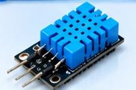
วัดความชื้นในอากาศ
หรือดิน
เซนเซอร์ระดับน้ำ
(Water Level Sensor)
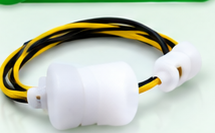
ตรวจจับระดับน้ำ
เซนเซอร์ตรวจจับการเคลื่อนไหว
(Motion Sensor)
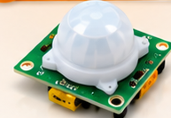
ตรวจจับการเคลื่อนไหว
หรือการมีอยู่
เซนเซอร์แสง
(Light Sensor)
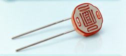
วัดความสว่าง
ของแสง
เซนเซอร์ความดัน
(Pressure Sensor)
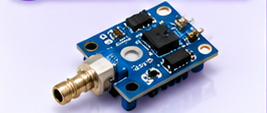
วัดแรงดันของก๊าซ
หรือของเหลว
เซนเซอร์คุณภาพอากาศ
(Air Quality Sensor)
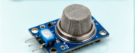
ตรวจวัดมลพิษในอากาศ
เช่น PM2.5, CO₂
เซนเซอร์การสั่นสะเทือน
(Vibration Sensor)
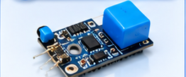
ตรวจจับการสั่นสะเทือน
หรือการกระแทก
ตัวอย่างการใช้งานจริง
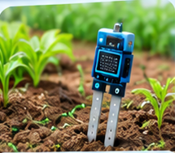
วัดความชื้นในดิน
เพื่อรดน้ำอัตโนมัติ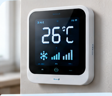
วัดอุณหภูมิในห้อง
ควบคุมแอร์อัตโนมัติ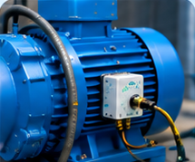
ตรวจจับการสั่นสะเทือน
เพื่อตรวจสอบเครื่องจักร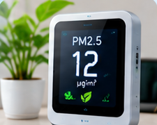
ตรวจวัดคุณภาพอากาศ
แจ้งเตือนเมื่อมีมลพิษ
สรุป“เซนเซอร์ คือ ตัวรับรู้ข้อมูลจากสภาพแวดล้อม แล้วส่งข้อมูลให้ระบบประมวลผล เพื่อนำไปสั่งงานหรือแสดงผลในรูปแบบต่าง ๆ”
🎯
ตรวจสอบได้
แบบ Real-Time⚙
เพิ่มความแม่นยำ
และประสิทธิภาพ🌿
ช่วยประหยัด
ทรัพยากร
คืออะไร?
ไมโครคอนโทรลเลอร์ คือ อุปกรณ์อิเล็กทรอนิกส์ขนาดเล็ก ที่รวมเอาหน่วยประมวลผล (CPU), หน่วยความจำ และวงจรควบคุมต่าง ๆ ไว้ในชิปเดียว เพื่อใช้ในการควบคุมและประมวลผลข้อมูล
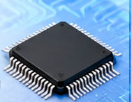
ประเภทของ Microcontroller
Arduino Unoใช้งานง่าย
เหมาะกับผู้เริ่มต้น
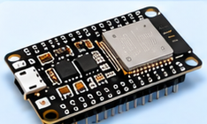
ESP32ประสิทธิภาพสูง
มี Wi-Fi และ Bluetooth
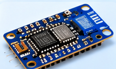
ESP8266เชื่อมต่ออินเทอร์เน็ตได้
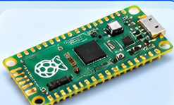
Raspberry Pi Picoขนาดเล็ก
ประสิทธิภาพดี
การต่อใช้งาน
ไมโครคอนโทรลเลอร์สามารถต่อใช้งาน
ได้หลายรูปแบบ เช่น
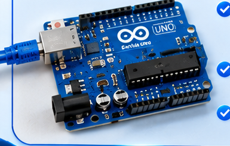
- ผ่าน USB
(เพื่อเขียนโปรแกรม
และจ่ายไฟ) - ผ่านแบตเตอรี่
(สำหรับงานพกพา) - ผ่านแหล่งจ่ายไฟ
(เช่น 5V หรือ 3.3V)
ประเภทการใช้งาน
⌂งานสมาร์ทโฮม(ควบคุมอุปกรณ์ในบ้าน)
▥งานอุตสาหกรรม(ควบคุมเครื่องจักร)
♥งานด้านการแพทย์(ติดตามสุขภาพ)
♧งานเกษตรอัจฉริยะ(ควบคุมการให้น้ำ/ตรวจวัด)
⌖งานยานยนต์(ระบบรถยนต์อัจฉริยะ)
หลักการประมวลผลและส่งข้อมูล
1. รับข้อมูล
(Processing Input)รับข้อมูลจาก
ระบบหรือข้อมูล
ที่กำหนด➜2. ประมวลผล
(Processing)ทำงานตาม
โปรแกรมที่เขียนไว้➜3. ส่งข้อมูล
(Communication)ส่งข้อมูลผ่าน
Wi-Fi / Bluetooth
หรือสื่อสารอื่น ๆ ✓ เพื่อควบคุมอุปกรณ์ หรือส่งข้อมูลไปยังระบบ Cloud
⌂ IoT ในชีวิตประจำวัน
IoT ช่วยให้ชีวิตสะดวกสบาย ปลอดภัย และประหยัดพลังงานมากขึ้น
ผ่านอุปกรณ์อัจฉริยะที่เชื่อมต่ออินเทอร์เน็ต
Smart Home : บ้านอัจฉริยะ
- ควบคุมไฟ แอร์ผ่านมือถือ
- ระบบรักษาความปลอดภัยด้วยกล้องอัจฉริยะ
Wearable : อุปกรณ์สวมใส่
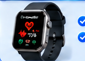
- วัดอัตราการเต้นหัวใจ
- ติดตามสุขภาพแบบเรียลไทม์
Smart Agriculture : เกษตรอัจฉริยะ
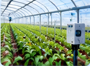
- ตรวจวัดความชื้นในดิน
- ควบคุมการให้น้ำอัตโนมัติ
Smart Transport : การขนส่งอัจฉริยะ
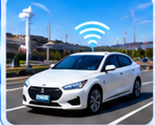
- ติดตามรถแบบเรียลไทม์
- วางแผนเส้นทางอย่างมีประสิทธิภาพ
▥ IoT ในโรงงานอุตสาหกรรม (Smart Factory)
IoT ช่วยยกระดับการผลิตให้ฉลาดขึ้น ด้วยการเก็บข้อมูลจากเครื่องจักรและกระบวนการผลิต
Machine Monitoring
ตรวจสอบเครื่องจักร
รู้สถานะการทำงานและแจ้งเตือนเมื่อมีปัญหา
Predictive Maintenance
บำรุงรักษาเชิงคาดการณ์
คาดการณ์ความเสียหายเพื่อซ่อมก่อนเกิดปัญหา
Production Monitoring
ติดตามการผลิต
รับรู้ปริมาณการผลิตและประสิทธิภาพแบบเรียลไทม์
Quality Control
ตรวจสอบคุณภาพ
ตรวจพบสินค้าที่มีปัญหาได้ตั้งแต่ต้นทาง
Energy Monitoring
ตรวจสอบพลังงาน
วิเคราะห์การใช้พลังงาน ลดค่าใช้จ่าย
Safety Monitoring
ตรวจสอบความปลอดภัย
แจ้งเตือนความเสี่ยงเพื่อป้องกันอุบัติเหตุ
⚙ ภาพรวมการทำงานของ IoT
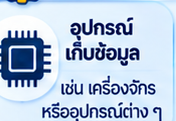
อุปกรณ์เก็บข้อมูลเช่น เครื่องจักร
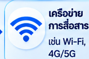
เครือข่ายการสื่อสารเช่น Wi-Fi, 4G/5G
ประมวลผลและวิเคราะห์
บน Cloud หรือเซิร์ฟเวอร์
➜แสดงผลและควบคุม
ผ่าน Dashboard
⭐ ประโยชน์
- เพิ่มประสิทธิภาพการทำงาน
- ลดต้นทุนและพลังงาน
- ตรวจสอบข้อมูลได้เรียลไทม์
- ยกระดับความปลอดภัย
⚠ ข้อควรระวัง
- ความปลอดภัยไซเบอร์
- ความเสถียรของเครือข่าย